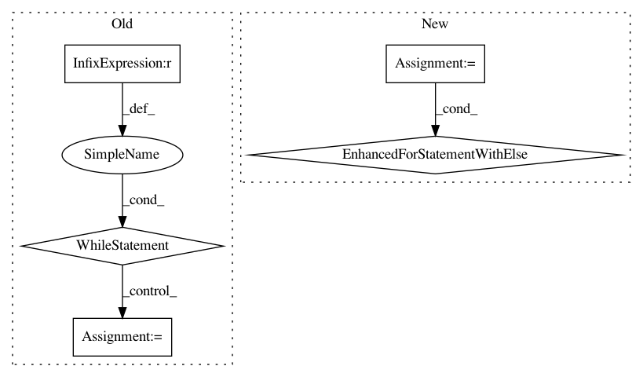

fcadcf45f48751876f396f34f65951cbbcdb8f56,neurodsp/swm.py,,_find_new_windowidx,#Any#Any#Any#Any#,139
Before Change
found = False
n_tries = 0
while found is False:
// Generate a random sample
new_samp = np.random.randint(n_samp)
// Check how close the sample is to other window starts
dists = np.abs(window_starts - new_samp)
if np.min(dists) > spacing_n_samps:
return new_samp
else:
n_tries += 1
if n_tries > tries_limit:
raise RuntimeError("SWM algorithm has difficulty finding a new window. \
Increase the spacing parameter, G.")
After Change
def _find_new_windowidx(window_starts, spacing_n_samps, n_samp, tries_limit=1000):
Find a new sample for the starting window
for n_try in range(tries_limit):
// Generate a random sample & check how close it is to other window starts
new_samp = np.random.randint(n_samp)
dists = np.abs(window_starts - new_samp)
if np.min(dists) > spacing_n_samps:
break
else:
raise RuntimeError("SWM algorithm has difficulty finding a new window. \
Increase the spacing parameter, G.")
return new_samp
In pattern: SUPERPATTERN
Frequency: 3
Non-data size: 5
Instances
Project Name: neurodsp-tools/neurodsp
Commit Name: fcadcf45f48751876f396f34f65951cbbcdb8f56
Time: 2019-03-18
Author: tdonoghue@ucsd.edu
File Name: neurodsp/swm.py
Class Name:
Method Name: _find_new_windowidx
Project Name: scipy/scipy
Commit Name: 79e2e292ee7a4b59a95abd95c45e6d02d7c6f99a
Time: 2020-05-05
Author: mhaberla@calpoly.edu
File Name: scipy/optimize/_linprog_rs.py
Class Name:
Method Name: _phase_two
Project Name: scipy/scipy
Commit Name: 2135b0efe977edbecd3cc4b28d9e50027e2929b6
Time: 2016-06-19
Author: denis@laxalde.org
File Name: scipy/optimize/optimize.py
Class Name:
Method Name: _minimize_newtoncg